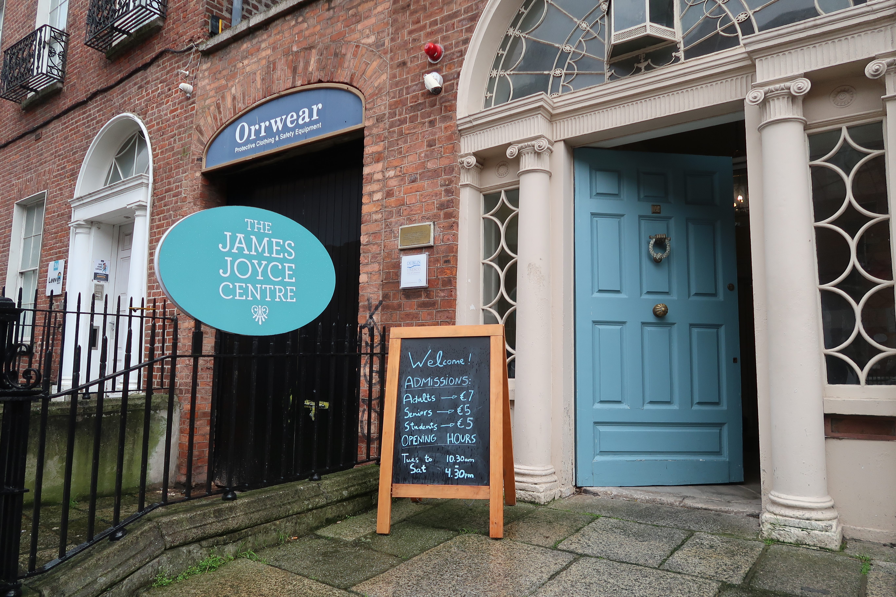

01
The Problem
There's an engagement gap at the heart of Irish literary heritage
James Joyce is a cornerstone of Dublin's identity — yet standing before a plaque at 7 Eccles Street, most visitors feel nothing. Traditional museum and street exhibits rely on static text and bronze markers that speak to historians, not to the curious traveler pulling out their phone.
Our design brief: How might we transform passive monument viewing into active literary interaction — for the modern traveler, the bookworm, and the history lover?
"How do we make a 110-year-old short story feel urgent on a busy Dublin street?"
